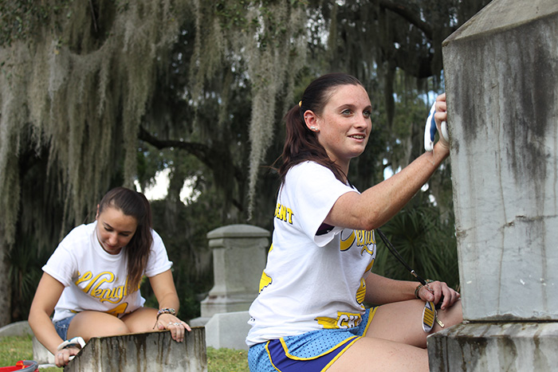

Take an Educational Walk on the Wild Side at Green-Wood Cemetery
Volunteer work
The Green-Wood Historic Fund is looking for volunteers!
As a volunteer, you will make rich connections with Green-Wood’s history and become a part of the unique and exciting work happening here. You will gain extensive knowledge on the historical and artistic significance of Green-Wood and have opportunities to interact with our many visitors and enthusiasts.
Volunteer tasks include assisting on tours and events, staffing our welcome cart, selling merchandise and conducting historical research. Some volunteer assignments, like our Civil War Project, are ongoing. Others are for specific events and operate on a date-by-date basis. Time commitments vary and are flexible. In all cases, volunteering will offer you a chance to make a personal connection with Green-Wood and become an ambassador for this nationally landmarked site